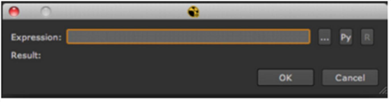
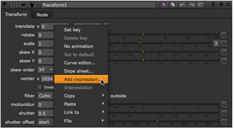
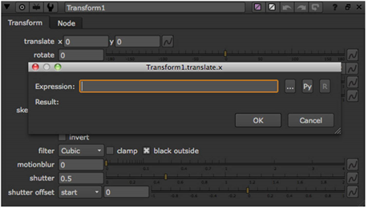
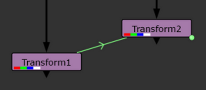
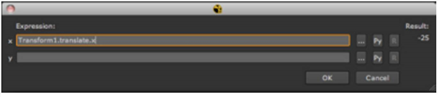
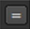

Through expressions, you can link the parameters from one node and control the values of the parameters in other nodes. When creating a linking expression, type the elements listed in the table below; remember to separate each element with a period.
|
Element |
Description |
|
Node name |
The node with the source parameter (i.e., Transform1). |
|
Parameter name |
The name of the parameter with the source value (for example, translate).The name is defined internally, and may not match the parameter’s label that appear in the Nuke interface. If necessary, hover over the parameter’s field with your mouse pointer and its name appears in the pop-up tool tip. |
|
Child parameter name (optional) |
Some parameters include child parameters, such as the fields for x and y axes, or red, green, and blue color channels. Child parameter names do match the label that appears before the parameter’s field (for example, x). |
|
Time |
By default, linking expressions pull values from the current frame number, but you can read values from other frames, either statically or dynamically (that is, with a temporal offset). If you want to read in a static value for a given frame, you just type that frame number inside a set of parenthesis (for example, (10)). If you want to read in dynamic values but with an offset in time, type t, the variable for time, followed by a + (for a forward offset) or - (for a backward offset), followed by a number representing the number of frames worth of offset. For example, typing (t-2) would capture values that are two frames back from the current frame. |
Thus, to create a linking expression that pulls the value from a Transform node’s x translation field at the tenth frame, you would type = on a parameter to open the expression dialog, and then enter Transform1.translate.x(10) in the dialog’s Expression field.

The steps below recap the process for creating a linking expression.
| 1. | Click on the destination parameter (the one which receives values from another parameter). |
| 2. | To display the expression dialog, right-click on the parameter and select Add expression, |

OR type = in the parameter field.

| 3. | In the dialog that opens, type the name of the node containing the source parameter and a period. (Each node prominently displays its name on its face.) |
| 4. | If you want to enter a multi-line expression, you can click the multi-line edit field button . |
| 5. | Follow the name of the node by the source parameter’s name and a period. (If you don’t know the parameter’s name, you can hover over its field in order to see it displayed in a tool tip.) |
| 6. | Optionally, type the child parameter’s name and a period. |
| 7. | Optionally, type a frame number or offset variable in brackets (for example, (2) or (t-2))in order to specify the frame or range of frames from which you pull values. |
| 8. | Next to the expression entry field, you can click the Py button to automatically make your expression a Python callback. You can also toggle the R button to have your expression interpreted as an expression or as a series of statements. For example, with the multi-line edit mode and the Python mode on, you could enter the following expression, and get 15 as the resulting value: |
-execlocal def example(): a = 5 return a def example2(): b = 10 return b ret = example()+example2()
| 9. | Click OK. This links the parameters, which turn blue. In the Node Graph, a green arrow appears between the nodes to indicate that they are linked via an expression. |

| 10. | To edit the expression later on, right-click on the parameter and select Edit expression (or press = on the parameter). You can also click the animation button |

| 1. | Ctrl/Cmd+drag the parameter that has the values you want to use on top of the parameter that receives these values. This links the parameters, which turn blue. In the Node Graph, a green arrow appears between the nodes to indicate that they are linked via an expression. |
To view or edit the expression, right-click on the parameter and select Edit expression.
| 2. | If you want to link several parameters at the same time, Ctrl/Cmd+drag the animation button |
To view or edit the expressions used to link the parameters, click the animation button and select Edit expression.
You can also create expression links to connect channel, layer, and format controls with other controls in various nodes. Since these controls aren’t meant to be animated, you can’t use the full range of Nuke expressions, nor can you use Python or Tcl languages. You can link controls using the Link menu  next to the control on the properties panel:
| 1. | Click the Link menu and select Set link. An Expression dialog opens. |
| 2. | Enter your expression in the Expression field and click OK. |
| 3. | You can edit an existing link by clicking the Linkmenu and selecting Editlink. |
| 4. | You can also Ctrl/Cmd+drag the Link menu to another control to create a link between the two. |
| 5. | To remove a link, click the Linkmenu and select Removelink. |
|
|